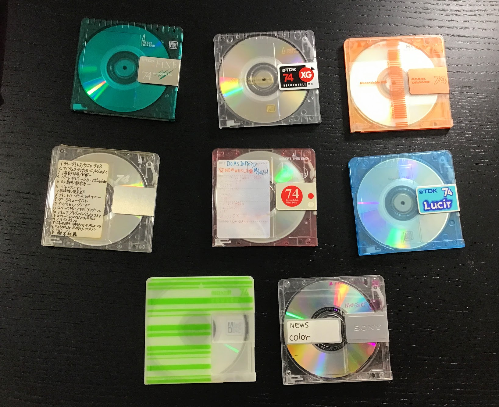
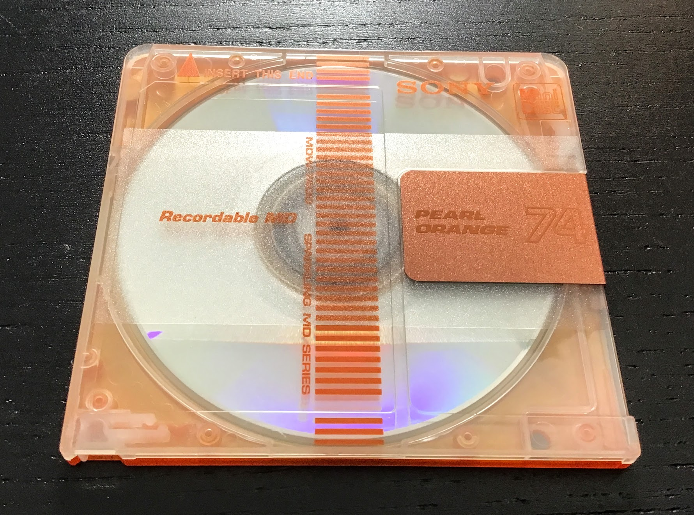
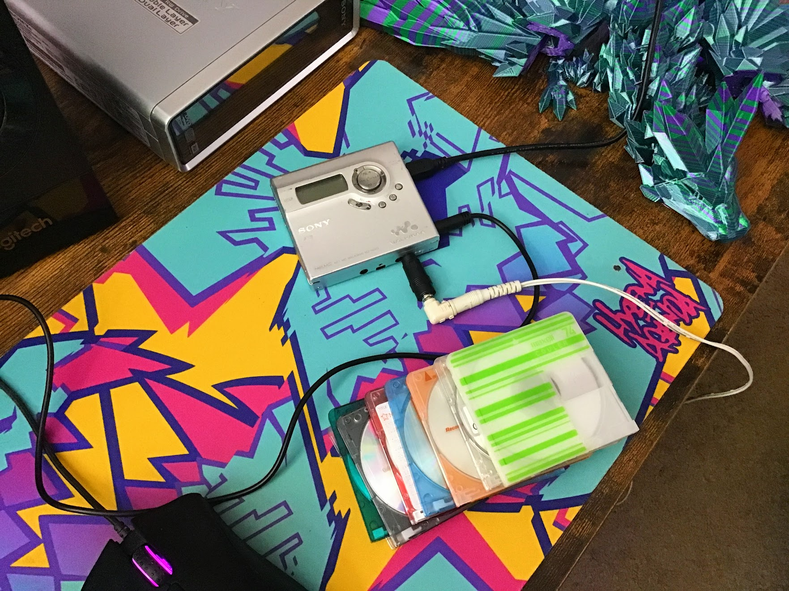
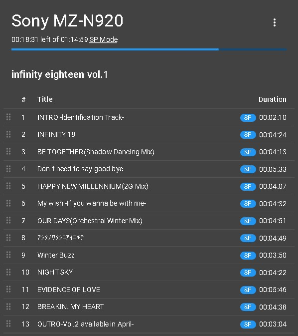

it's no secret that i absolutely love MiniDisc, the magneto-optical music format of the future! a few weeks ago, my friend Vensolin the Unjust (from the last journal entry) let me know that the vaporwave apparel company vapor95 was having a massive sale on a bunch of their products, so i browsed their website and found that they were selling packs of random used minidiscs! the normal $30 price for this 4-pack of discs is pretty atrocious at $7.50 per disc, but it was on sale for 50% off which took the price down to the much more reasonable (but still overpriced) $3.75 per disc. it's still way cheaper to just buy discs off of ebay or yahoo auctions intead though.
nevertheless, i couldn't pass up this opportunity to get a grab-bag of totally random minidiscs, so i ordered two of these packs. they ended up taking just shy of three weeks to arrive, which is pretty slow considering that both vapor95 and i are located in the US, although i wouldn't be surprised if they had just gotten swamped with orders at the time due to their huge sale. if i had ordered a random pack of discs from japan instead, they probably would've actually arrived a bit sooner. (and would've been cheaper too...)
anyways... now that the discs are here, let's see what i got!
from left to right, top to bottom:
not too bad! there's a pretty wide variety of colors and manufacturers here. i'm particularly fond of the Sony Sparkling MD Series - i've never heard of that series before and it looks cool as heck! it's so cool that i almost can't believe that it's a real product. i'll definitely be on the lookout for more of these Sony Sparking MDs.
let's see what's on 'em! according to vapor95, these discs are from a "deceased Japanese karaoke enthusiast" and contain "undiscovered and unknown pop music from Japan in the 90s and early 2000's", so it sounds like i could be in for some interesting new music! i'll enlist the help of my trusty Sony MZ-N920 NetMD Walkman to rip these discs.
i'll be using web minidisc pro to rip these discs, a fantastic web app for doing all sorts of NetMD stuff, like burning, ripping, and even editing the TOC directly. yep, web minidisc does what sonicstage don't and can rip the raw atrac data right off of discs over NetMD!
let's load the first disc - the TDK Fine:
hey, it's actually got disc and track titles!! usually people don't bother entering them and just leave them blank, so it's actually kinda uncommon to see these. i'll get all these discs ripped and take a listen to what's on them.
unfortunately, i wasn't so lucky with the other discs. most of them had no titles entered at all, so if i want to identify the tracks, i'll just have to shazam them. the vapor95 website was correct - all of the songs on these discs sound like late 90s japanese pop, which isn't usually my thing, but i might as well give them a try and see what i think! who knows, maybe i'll find something new that i like. in the meantime, if you want to check out any of these tracks yourself, you can grab them from my library on soulseek - my username is "novasheridan" and i have a dedicated folder for my used minidisc rips on there. i'm not online all that often on slsk, but if you see me on, feel free to hit me up!
UPDATE: it sounds like a couple of these discs (including the Sony Sparkling MD) contain recordings from the radio. they feature songs of wildly varying volumes and genres that are punctuated by someone talking - perhaps the DJ?